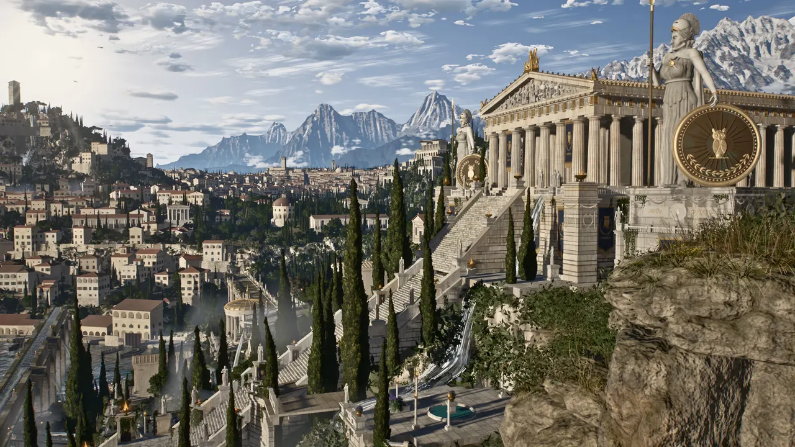

ПРОЦЕДУРНАЯ АРХИТЕКТУРА · ИССЛЕДОВАНИЕ 01
Athenaion.
Мрамор над водой. Город среди скал. Девять точек, из которых можно открыть целый мир.

01 / 09 · ГАЛЕРЕЯНад городом
Храм, гавань и белый камень над морем.
Первый запуск может занять несколько минут.
Вернуться к галерееГалерея открывается сразу. 3D запускается по вашему выбору; для него нужен WebGL 2. На слабом устройстве начните с лёгкого качества.
МИР, НАПИСАННЫЙ КОДОМ
От функции — к пространству.
Колонны, скалы, деревья и вода создаются процедурно. Это исследование архитектуры и визуализации: можно изучить сцену, сменить ракурс и увидеть, как код становится ландшафтом.
- 09
- ракурсов одного мира
- 15
- модулей генерации
- MIT
- открытый исходный код
Авторство и наша работа
Оригинальный мир Athenaion и рендеры созданы Leon Lin с Claude Code. Architectural AI Lab добавляет галерею, управление сценой, русский и английский интерфейс, лёгкий режим, обработку ошибок и воспроизводимую сборку. Это адаптация открытого проекта, а не наша авторская реконструкция античного города.